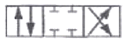
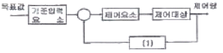

생산자동화기능사 (2008-07-13 기출문제)
1과목: 기계가공법 및 안전관리(대략구분)
1. 지름 30mm인 환봉을 318 rpm으로 선반 가공 할 때, 절삭 속도는 약 몇 m/min 인가?
- 30
- 40
- 50
- 60
(정답률: 58%)

2. 각도 측정에 사용하는 사인바의 호칭치수는?
- 롤러의 직경
- 양쪽 롤러의 중심사이 거리
- 사인바의 쪽
- 사인바의 전체길이
(정답률: 76%)
3. 밀링작업에서 보안경을 착용하는 가장 큰 이유는?
- 커터가 부러져 튀기 때문
- 주유가 비산하기 때문
- 공작물이 튈 염려가 있기 때문
- 칩의 비상이 있기 때문
(정답률: 72%)
4. 셰이퍼나 플레이너에서 급속 귀환 운동기구를 사용하는 목적은?
- 절삭능력을 높이기 위하여
- 재료를 절약하기 위하여
- 기계의 수명을 연장하기 위하여
- 작업자가 지루하지 않도록 하기 위하여
(정답률: 70%)
5. 절삭 유체의 역할로 틀린 것은?
- 냉각 작용을 한다.
- 공구 수명을 단축 시킨다.
- 세척 작용을 한다.
- 윤활 작용을 한다.
(정답률: 89%)
6. 다음 중 절삭가공이 아닌 것은?
- 선반 가공
- 밀링 가공
- 드릴링 가공
- 압연 가공
(정답률: 79%)
7. 다음 측정기 중 길이측정에 적합하지 않은 것은?
- 버니어 캘리퍼스
- 마이크로미터
- 하이트게이지
- 수준기
(정답률: 79%)
8. 래핑의 특징으로 잘못된 것은?
- 가공면이 매끈한 거울면을 얻을 수 있다.
- 정밀도가 높은 제품을 가공할 수 있다.
- 가공이 간단하니 대량생산에 적합하지 않다.
- 가공면은 윤활성 및 내마모성이 좋다.
(정답률: 83%)
9. 밀링 머신에서 12개의 날을 가진 커터를 사용하여 1개의 날 당 이송량이 0.2mm, 회전수 400 rpm으로 가공하려 할 때 테이블의 이송속도 [m/min]는 얼마인가?
- 80
- 800
- 96
- 960
(정답률: 61%)
10. 연삭숫돌의 3요소에 해당하지 않는 것은?
- 결합도
- 숫돌입자
- 기공
- 결합제
(정답률: 71%)
2과목: 기계제도(대략구분)
11. 다음 중 내삭용 알루미늄(Al) 합금이 아닌 것은?
- 알민(almin)
- 알드레이(aldrey)
- 하이드로날룸(hydromalium)
- 일렉트론(Elektron)
(정답률: 68%)
12. 피치 × 나사의 줄수 = ( )식에서, ( )에 들어갈 적합한 용어는?
- 리드
- 유효지름
- 호칭
- 지름피치
(정답률: 58%)
13. 두 축을 빨리 연결하고 또 빨리 끊을 필요가 있을 때 사용하는 축 이동은?
- 클러치
- 셀러 커플링
- 유니버셜 조인트
- 플랜지 커플링
(정답률: 56%)
14. 양쪽으로 회전이 가능하도록 접선키를 사용할 경우 두 키의 중심각은 몇 도로 설치하는가?
- 60˚
- 75˚
- 100˚
- 120˚
(정답률: 59%)
15. 주형에 주조할 때, 경도가 필요한 부분에 칠 메탈(chill metal)을 이용하여 그 부분의 경도를 향상시키는 주철은?
- 가단주철
- 구상흑연주철
- 미하나이트 주철
- 칠드주철
(정답률: 62%)
16. 상온, 아공석강 영역에서 탄소량의 증가에 따른 탄소강의 기계적 성질을 설명한 것 중 옳지 않은 것은?
- 가공변형이 어렵다.
- 강도가 증가한다.
- 인성이 증가한다.
- 경도가 증가한다.
(정답률: 45%)
17. 황동을 불순한 물(해수) 또는 부식성 물질이 용해된 곳에서 사용할 때 발생하는 성질은?
- 자연균열
- 방치갈립
- 탈아연 부식
- 경년변화
(정답률: 64%)
18. 미끄럼을 방지하기 위하여 접속면에 지형을 붙여 맞물림에 의하여 전동하도록 한 벨트는?
- 타이밍 벨트
- 폴리 벨트
- 평 벨트
- 강 벨트
(정답률: 36%)
19. 스테인리스강(stainless steel)의 주성분이 아닌 것은?
- Al
- Cr
- Fe
- Nl
(정답률: 41%)
20. 코일스프링의 평균 지름이 20 mm, 소선의 지름이 2 mm라면 스프링 지수는?
- 40
- 0.1
- 18
- 10
(정답률: 59%)
21. 고온의 오스테나이트 영역에서 탄소강을 냉각하면 냉각속도의 차이에 따라 여러 조직으로 변태되는데, 이들 조직의 강도와 경도를 큰 순서대로 바르게 나열한 것은?
- 마텐자이트 > 소르바이트 > 트루스타이트
- 소르바이트 > 트루스타이트 > 마텐자이트
- 트루스타이트 > 마텐자이트 > 소르바이트
- 마텐자이트 > 트루스타이트 > 소르바이트
(정답률: 49%)
22. 외역의 작용으로 형상이 변경되어도 다시 원래의 모양으로 되돌아 올 수 있는 합금을 무엇이라 하는가?
- 제정 합금
- 형상 기억 합금
- 비정질 합금
- 초전도 합금
(정답률: 90%)
23. 고정 원판측 코일에 전류를 통하면 전자력에 의하여 회전 원판이 잡아 당겨져 제동이 되는 작용원리로 공작 기계, 철도차량 등에 널리 사용되는 브레이크는?
- 블록 브레이크
- 전자석 브레이크
- 디스크 브레이크
- 밴드 브레이크
(정답률: 75%)
24. 소리가 벽에 부딪쳐서 반사되는 것과 같은 현상을 이용하여 20 kHz 이상의 주파수에서 금속 내부의 결합을 비파괴적으로 검출하는 검사 방법은?
- 방사선 탐상법
- 침투 탐상법
- 음향 방출법
- 초음파 탐상법
(정답률: 72%)
25. 베어링 호칭번호가 62⑤인 레이디얼 물 베어링의 안지름은 얼마인가?
- 5mm
- 25mm
- 82mm
- 2⑤mm
(정답률: 74%)
26. 컴퓨터 네트워크 기술을 이용하여 물건과 정보의 흐름을 일체화시켜 경영 효율화를 기하기 위한 자기 통제 기능을 가진 유연한 생산 시스템의 무엇이라 하는가?
- CTM
- CAT
- CAD
- CAM
(정답률: 44%)
27. 다음 중 CNC 선반에서 주축과 관련이 없는 보조 기능은?
- M03
- M04
- M⑤
- M08
(정답률: 66%)
28. 컴퓨터 기본 구성에서 출력장치가 아닌 것은?
- 프린터
- 플로터
- 디스플레이
- 키보드
(정답률: 76%)
29. 머시닝 센터에서 공구지름보정을 취소하는 준비기능은?
- G40
- G41
- G42
- G43
(정답률: 45%)
30. 일반적으로 CNC 선반 작업에서 가공할 수 없는 작업은?
- 외경 가공
- 기어 가공
- 나사 가공
- 내경 가공
(정답률: 70%)
3과목: 메카트로닉스 일반(대략구분)
31. CNC 공작기계의 특징으로 틀린 것은?
- 생산성 향상
- 설계 데이터의 활용
- 작업자의 피로 가중
- 제품의 균일화
(정답률: 90%)
32. 기계설계에 있어서 컴퓨터 이용의 필요성을 설명한 것으로 틀린 것은?
- 품질향상
- 설계기간의 단축
- 설계작업의 원가 절약
- 호환성의 저하
(정답률: 78%)
33. CAD/CAM 시스템의 제품 모델 데이터 교환을 위한 형식으로 맞지 않는 것은?
- IGES
- DXF
- STEP
- HWP
(정답률: 51%)
34. 머시닝 센터의 주요 구성요소가 아닌 것은?
- 주축대
- 조작반
- ATC 및 APC
- 심압대
(정답률: 49%)
35. CNC 공작기계의 설명으로 옳지 않은 것은?
- 품질이 균일한 생산품을 얻을 수 있으나 고장 발생시 자기진단이 어렵다.
- 파트 프로그램을 매크로 형태로 저장시켜 필요시 호출하여 사용할 수 있다.
- 인치 단위의 프로그램을 쉽게 미터 단위로 자동 변환할 수 있다.
- 공작기계가 공작물을 가공하는 중에도 다른 파트 프로그램의 수정이 가능하다.
(정답률: 58%)
36. 정지된 유체내의 모든 위치에서의 압력은 방향에 관계 없이 모든 방향으로 일정하게 전단된다는 것으로, 모든 유압장치에 기본적으로 이용되는 원리는?
- 베르누이의 원리
- 파스칼의 원리
- 연속의 원리
- 샤를의 원리
(정답률: 65%)
37. 용량이 같은 단단 펌프 2개를 1개의 본체 내에 직렬로 연결시킨 것으로 고압으로 대 출력이 요구되는 곳에 사용되는 펌프는?
- 2단 베인 펌프
- 복합 펌프
- 2단 복합 펌프
- 단단 베인 펌프
(정답률: 58%)
38. 다음 방향제어 밸브의 조작방식 중 인력조작방식이 아닌 것은?
- 누름버튼 방식
- 레버 방식
- 페달 방식
- 쿨러 방식
(정답률: 70%)
39. 공압기기에서 공기의 배기음을 줄이기 위해 배기구에 설치하는 것은?
- 공기압 필터
- 증압기
- 압력조절기
- 소음기
(정답률: 83%)
40. 다음 그림의 밸브 기호에서 제어 위치의 개수는?

- 1개
- 2개
- 3개
- 4개
(정답률: 73%)
41. 다음 중 어큐뮬레이터(축압기)의 용도로 적당하지 않은 것은?
- 펌프 맥동 흡수
- 충격압력의 완충
- 작동유 정도 향상
- 유압 에너지 축적
(정답률: 65%)
42. 유압 곡통유로서 구비하여야 할 성질로 틀린 것은?
- 압축성이어야 한다.
- 장시간 사용하여도 화학적으로 안정하여야 한다.
- 열을 방출시킬 수 있어야 한다.
- 운전온도 범위에서 회로내를 유연하게 유동할 수 있는 적절한 점도가 유지 되어야 한다.
(정답률: 63%)
43. 자중에 의한 낙하나 운동 물체의 관성에 의한 액추에이터의 자중을 방지하기 위해 배압이 생기게 하는 유압밸브는?
- 감압 밸브
- 시퀀스 밸브
- 카운터밸런스 밸브
- 릴리프 밸브
(정답률: 58%)
44. 공압장치의 특징이 아닌 것은?
- 동력전달 방법이 간단하다.
- 힘의 증폭이 용이하다.
- 유압장치에 비해 용달성이 우수하다.
- 에너지의 축적이 용이하다.
(정답률: 56%)
45. 공압 발생 장치와 관계없는 것은?
- 공기 압축기
- 공기 탱크
- 공기 건조기
- 공압-유압 변환기
(정답률: 72%)
46. 산업현장에서 사용되고 있는 로봇이 경제적이고 실질적으로 이용될 수 있는 분야에 대한 기준이 아닌 것은?
- 위험한 직업
- 간단한 반복 작업
- 검사가 필요하지 않는 작업
- 변화가 자주 일어나는 작업
(정답률: 82%)
47. 다음 중 PLC에서 사용하는 프로그래밍 방식이 아닌 것은?
- 레더도 방식
- 명령어 방식
- 논리도 방식
- 클램프 방식
(정답률: 69%)
48. PLC의 출력부에 사용되는 기기가 아닌 것은?
- 모터
- 램프
- 센서
- 전자밸브
(정답률: 65%)
49. 아래의 되먹임 제어계의 구성도에서 (1)요소에 대한 설명으로 옳은 것은?

- 목표 값에 비례하는 입력신호를 발생하는 요소
- 기존입력과 되먹임 양을 비교하여 오차를 만들어내는 요소
- 동작신호에 따라 제어대상을 제어하기 위한 조작량을 만들어 내는 요소
- 제어량이 목표 값과 일치하는가를 알기 위해서 되먹임시키는 요소
(정답률: 64%)
50. 다음 중 수치제어공작기계(NC 공작기계)는 자동생산시스템의 어떤 분야에 속하는가?
- 자동가공
- 자동조립
- 자동설계
- 자동검사
(정답률: 78%)
51. 서보기구의 제어량에 해당되지 않는 것은?
- 위치
- 저항
- 방위
- 자세
(정답률: 52%)
52. 아날로그 값인 길이나 회전각을 디지털 신호로 변환하는 검출기는?
- 바코드
- 변형률 게이지
- 엔코더
- 포텐스미터
(정답률: 56%)
53. PLC 제어 방식에 대한 설명으로 틀린 것은?
- 고장진단과 점검이 용이하다.
- 제어회로의 변경이 어렵다.
- 산술, 비교연산과 데이터 처리가 가능하다.
- 신뢰성이 높고 고속동작이 가능하다.
(정답률: 82%)
54. 공장자동화의 추진 목적과 가장 거리가 먼 것은?
- 생산성 향상
- 품질의 균일화
- 제품 고급화
- 원가 절감
(정답률: 72%)
55. 자동화시스템의 주요 3요소에 속하지 않는 것은?
- 입력부
- 출력부
- 제어부
- 전원부
(정답률: 83%)
56. 다음 중 개회로 제어시스템에는 없고 폐회로 제어시스템에만 있는 것은?
- 제어요소
- 제어대상
- 검출부
- 외란
(정답률: 46%)
57. 평상시 닫혀 있다고 해서 NC(normal closed) 접점이라고 하는 것은?
- a접점
- b접점
- c접점
- T접점
(정답률: 84%)
58. 다음 중 센서를 선정하여 응용할 때 고려해야 할 사항으로 거리가 먼 것은?
- 감지거리
- 신뢰성과 내구성
- 반응속도
- 석상
(정답률: 83%)
59. 미리 정해진 프로그램에 따라 제어량을 변화시키는 것을 목적으로 하는 제어로 열처리 노의 온도 제어, 엘리베이터 제어 등에 이용되는 제어는?
- 정치 제어
- 프로그램 제어
- 추종 제어
- 비율 제어
(정답률: 57%)
60. 물체가 방사하고 있는 각종 적외선을 검출하는 비접촉식 센서로 최근에는 TV나 VTR 등 가전제품의 리모컨, 자동문의 스위치, 방사온도계 등에 사용되고 있는 것은?
- 자기센서
- 초음파센서
- 적외선센서
- 열전대
(정답률: 80%)
= 3.14 × 30 × 318 ÷ 1000
≈ 30 (m/min)
절달 속도 공식에서 지름이 직접적으로 영향을 미치기 때문에, 지름이 30mm이므로 정답은 30입니다.